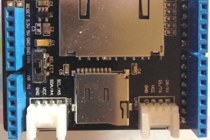

Sleep Clock
ちょっと前から、振動を検知して睡眠サイクルを推定し、最適なタイミングで起こしてくれるアプリを色々と試してます。 すっきり起きれたりすると嬉しいので、そんな目覚まし時計を探してみたら、意外と高い！ とりあえず、睡眠サイクルをグラフで取得するような機械を自分で作れないかと試行錯誤したら、 意外と作れてしまったので、画像を中心に公開してみました。
Agenda
SDカードモジュールの製作 .. 後述しますが、専用のモジュールがなかったので作りました
プログラム .. センサデータを取得してSDカードに保存するプログラムを書きました
解析 .. 出力されたデータを自動的にグラフにするところまでbash scriptを書きました
パッケージング .. なんかちょっと見た目をかっこ良く（可愛く？）してみました
Circuit Design
SDカード用回路
SeeedStudioにはSDカード用のモジュールもあるが、これはArduino/Arduino Uno用。 Arduino MegaはSPIのポートが異なっているために使えない。 そこで、Arduino Mega用Prototype ShieldにSDカードスロットを接続した。 SDカードスロットはSunhayato CK-40。右の回路図では31〜34ピンと接続しているが、実際には50〜53なので注意（回路図作成ツールのEagleの使い方がよくわからず、番号を書き換えることができなかった）。
{kind=link}
-
Breadboard
-
Circuit (front)
-
Circuit (back)
-
Join with Arduino Mega
-

SD Card Shield
-
SD Card Shield
{kind=link}
{kind=link}
{kind=link}
{kind=link}
{kind=link}
Grove System
SeeedStudio社のGroveで各パーツを接続することにより、（基本的には）ハンダ付けなしに各機能を利用できます。 今回は（SD以外の）すべてのパーツが見つかったので、これを大活用させてもらうことにしました。
スイッチサイエンスさんで購入していますが、 本家本元のSeeedStudioさんには、 スイッチサイエンスで扱っていない「手首での脈拍を検知するセンサ」などがあって楽しいです。
今回使ったパーツは以下の通り
- 7 Segment LED
- Motion Sensor
- Real Time Clock
- RGB LED
7 Segment LED
Motion Sensor
Real Time Clock
RGB LED
{kind=link}
Code
SleepClock.c
時間の取得、動感知センサデータの取得、ログ書き込み、エラー処理の各機能を実装。 それぞれタイマを用いて擬似的な割り込みを実現しています。
#include "Metro.h"
#include "sc.h"
Metro watch4DisplayTimeNumber = Metro(250, 1);
Metro watch4DisplayTimeColon = Metro(500, 1);
Metro watch4MotionSensor = Metro(200, 1);
Metro watch4WriteData2SD = Metro(10000, 1); //10sec.
void setup() {
Serial.begin(57600);
ledSetup();
dateSetup();
sdSetup();
/*
* Setup Motion Sensor
*/
pinMode(4, INPUT);
delay(2000);
}
void loop() {
// Display time of now, to 7 segment, without colon
if (watch4DisplayTimeNumber.check() == 1) {
getDateDs1307();
}
// Display time of now, to 7 segment, with colon
if (watch4DisplayTimeColon.check() == 1) {
output2seg();
}
// Detect motion sensor value
if (watch4MotionSensor.check() == 1) {
int sensorValue = digitalRead(4);
illuminateLed(sensorValue);
buildLog(sensorValue);
}
// Save to SD
if (watch4WriteData2SD.check() == 1) {
Log2SD();
}
}
複数タイマを実現するArduino Metroライブラリを用いて、割り込みっぽく、各機能を実現しています。
watch4DisplayTimeNumberは現在の時間を7セグメントLEDに表示するためのタイマで、更新間隔は250ms。
Metro watch4DisplayTimeColonは7セグメントLEDを更新しますが、RTCモジュールから時間を確認することはありません。
500ms間隔で更新するのは『時』と『分』の間に表示する『：』（コロン）。
表示されていれば非表示に、非表示であれば表示します。
Metro watch4MotionSensorは動感知センサを確認するセンサで、200ms毎にデータを取得します。
但し、センサ側の最低更新時間が300msのため、更新間隔については見直す必要があるかもしれません。
Metro watch4WriteData2SDorはSDカードへの書き込み間隔で、10,000ms（10s）毎に設定しています。
これはSDカードへのアクセス頻度を下げることで、SDカード自体の劣化及び、書き込みエラーを防止する目的があります。
それでも10時間で216,000回にもなるため、更に頻度を下げることが必要かもしれません。
SleepClockData.sh
エラーは生じていないが、壊れたデータを判別して排除する。 本来はデータ保存時にチェックサムを計算して付与することが望ましいが、今回はそのコストに見合わないと判断し、 シェルで計算させることにした。 結果はCSVファイルで出力される。
SleepClockPlot.sh
CSVファイルを読み込み、Gnuplotを用いてデータをプロットする。 デフォルトで読み込んだファイルに『.png』をつけて画像を保存するよう設定した。
Graph
実際にデータを取得してみました。 センサの配置位置はベッド（頭位）の高さと同じくらいで、距離は50cm程度離しています。 それぞれ測位時間が違うのと、継続的なデータがないので、正確なことは言えませんが、なかなかよく測定できているようです。
グラフはX軸に時間、Y軸に動感知センサの反応回数をプロットしています。 すなわち、グラフの数値が高くなっていれば、頻繁に動いた（寝返りなど）ということになります。
左側の青いグラフはiPhoneアプリ「快眠サイクル」でのデータです。 このアプリは枕元にiPhoneを置いて、その振動からサイクルを検知していると思われるので、原理的には同じです。
{kind=link}
{kind=link}
2013.01.30 01:00-08:30

こちらのデータは少し厄介です。 午前３時半頃、午前４時半頃のデータは一致しますが、午前２時半頃のデータは一致しません。 また、快眠サイクルでは午前６時半を起床時間に設定しており、ほぼ同時刻に起床と判断されてしまっているため、それ以後のデータは取得できていませんでした。 就寝と起床をどのように判断するのかは、少し考える必要がありそうです。
{kind=link}
Packaging
ちょっとテンションを上げるために、PC直結のパーツむき出しだけじゃなくて、なんか製品っぽくパッケージングしてみました。 100均で買ってきた箱に入れてみましたが、意外と良い感じに仕上がりました。

Conclusion
ちゃんとしたデータの取得方法とかは分からないのだが、きちんとしたデータを取ることができた。 きれいにパッケージングもできたので満足！
Future
更なる改良のために。
SDカードモジュールのハンダがちょっといけてない（特に裏！）ので、もうちょっと洗練させたい
箱が大きいので、もっと小さいパッケージを作りたい
XBeeを使って無線通信でデータを送信したい
インターネットを通じて直接データを送信したい（サーバ側の開発も含めて）
Arduino Pro Miniを使って、可能な限り小さいものにしたい